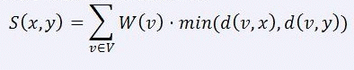

共N+1行。
第一行有一个正整数N，表示区域的个数。
接下来有N-1行，每行两个整数u、v，表述区域u和区域v之间有一条道路。
最后一行有N个正整数，第i个正整数表示区域i的权值W(i)。

共N+1行。
第一行有一个正整数N，表示区域的个数。
接下来有N-1行，每行两个整数u、v，表述区域u和区域v之间有一条道路。
最后一行有N个正整数，第i个正整数表示区域i的权值W(i)。
包含一个正整数，为最小的S(x, y)的值。
5
1 2
1 3
3 4
3 5
5 7 6 5 4
14
【样例解释】
选取区域2和区域3。
【数据规模和约定】
用H表示距离区域1最远结点的距离，即d(1, u)的最大值。
对于30%的数据满足：2 ≤ N ≤ 300
余下70%的数据满足：2 ≤ N ≤ 50000、H ≤ 70、W(i) ≤ 100